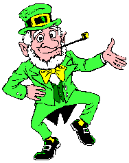

Limericks: Syntax and Meaning
vEach person will get one line of a limerick.
vYou need to find the other 4 people with lines from that limerick.
vYour limerick must be correct in both syntax and meaning. (It
must make sense and rhyme
correctly.)
